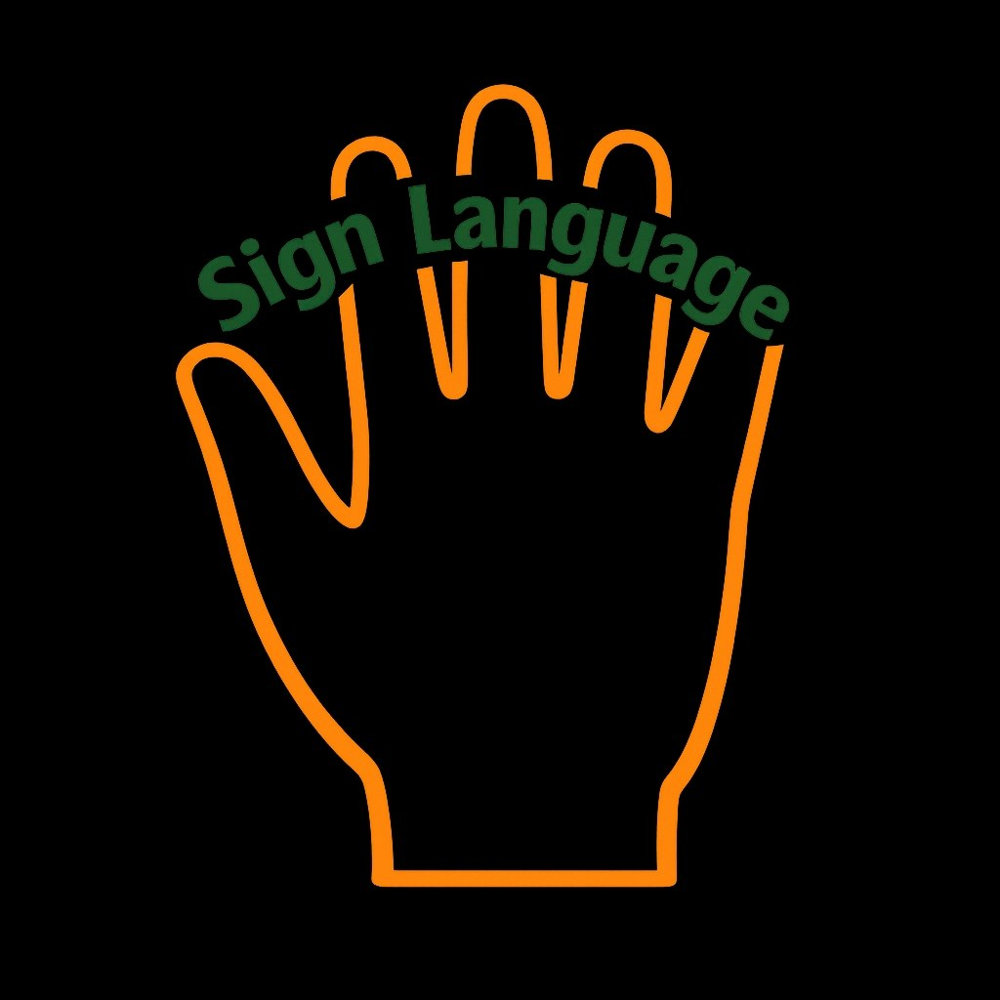

🔗 From Voice to Vision: The audio guide helps the blind. Now, the same smart glasses assist the deaf community by converting导游 speech into sign language in real time.

For hearing‑impaired visitors, the smart glasses display a small avatar in the corner of the AR lens. This avatar translates every spoken word into accurate sign language gestures in real time.
🤝👐
Example: "Welcome to Jazan" → shown as sign language symbols
The system currently supports Arabic and English sign language, making Jazan an inclusive destination for all tourists.
After enabling communication for both the blind (audio) and the deaf (signs), the next page introduces a health monitoring feature – vital for exploring Jazan’s high‑altitude mountains.
Or go back to Audio Guide to review voice assistance.